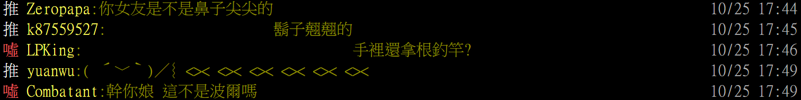

說明
teacher forcing 就是當模型預測錯誤時，告訴他正確的答案
就像學校的老師指正學生的錯誤一樣
用來訓練RNN的方法，能有效、快速收斂模型，減少模型偏離的狀況
Example
假設我們希望有一個模型，輸入下面的句子後，模型能夠預測出相同順序的句子
1 | This is our place |
首先我們必須先將上面的句子增加兩個標記，讓模型知道要開始預測以及什麼時候結束預測
: start of sentence : end of sentence
變成這樣
1 | <SOS>This is our place<EOS> |
接著我們將
假設模型預測出來的結果是 b ，與我們期望的值不同
若這個時間點(t0)不告訴模型這個預測值是錯誤的，任由模型繼續用錯誤的答案去預測下一個word，模型可能就會越偏離我們所希望的正確答案
1 | input value | output value | ground truth | time |
或許可以經由長時間的訓練，讓模型慢慢學習預測到正確的句子
但這種單純靠機器自己學習修正的方式，可能會耗費太多的訓練時間，模型的不穩定性也會較高
模型預測值偏離的嚴重性
從女友偏離到波爾XD 一步錯步步錯

為了避免模型偏離的狀況，就有了Teacher forcing的策略產生
如同老師糾正學生錯誤的答案一樣，我們可以將模型預測出的結果捨去不用，改成實際的正確答案讓模型繼續進行下一句的預測
根據Teacher forcing的方法，可以將上面的例子改成
將b這個錯誤預測值捨去不用，告訴模型正確答案，模型就可以迅速的收斂，容易預測出正確的資料
1 | input value | output value | ground truth | time |